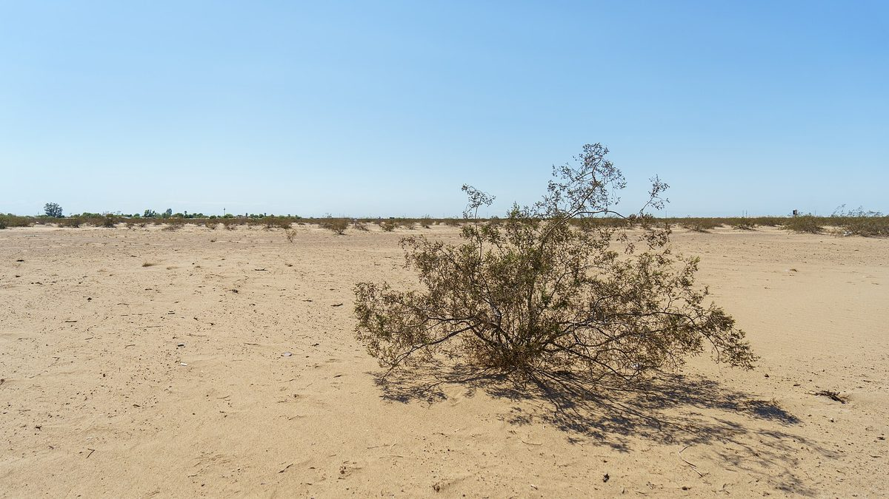

미국 에너지부, 원주민 부족 61곳의 에너지 사업 63건 1억2,500만 달러 이상 지원 협상 대상 선정…전기 없던 150가구에 전기 공급 계획

16개 주에서 공동체 에너지 13건·초기 개발 27건·대형 계획 23건…원주민에너지실, 개발 단계와 상관없이 지원 문 넓혀, 사업마다 협상 거쳐야 지원 확정
미국 에너지부(DOE)가 10월 22일 원주민 부족이 추진하는 에너지 사업 63건을 1억2,500만 달러가 넘는 지원의 협상 대상으로 골랐다고 발표했다. 선정된 사업은 몬태나·워싱턴을 비롯한 16개 주에 걸쳐 있고, 부족 단체 61곳이 참여한다. 에너지부는 이번 지원이 에너지 비용을 낮추고 전기 접근을 넓히며 부족 경제의 성장을 돕기 위한 것이라고 설명했다. 사업은 공동체 에너지 13건, 초기 개발 단계 27건, 계획 단계의 대형 에너지 사업 23건으로 나뉜다. 공동체 사업 가운데 일부는 전기가 들어가지 않던 부족 가정 150가구에 전기를 넣고, 500가구·사업장의 난방을 천연가스로 바꾸며, 전력 설비를 고쳐 공급을 안정시킬 계획이다. 에너지부 원주민에너지실(Office of Indian Energy)은 개발 단계와 관계없이 더 다양한 기술과 방식의 사업으로 지원 대상을 넓혔다고 밝혔으며, 이번 선정은 확정이 아니어서 사업마다 협상을 거쳐야 지원금이 나간다.
시민에너지 관점
부족 단체 61곳이 직접 사업 주체로 나서 1억2,500만 달러가 넘는 지원을 두고 협상한다는 것은, 지역 공동체를 에너지 사업의 주인으로 세우는 정책이 연방 차원에서 이어지고 있음을 보여 준다. 이번 묶음에는 천연가스 난방 전환도 들어 있어 모두 재생에너지 사업은 아니고, 선정이 곧 지원 확정도 아니라는 점은 짚어 둘 필요가 있다. 그래도 전기 없이 지내 온 150가구처럼 소외된 공동체가 스스로 계획을 세우고 설비를 소유해야 요금 절감과 일자리가 그 지역에 남는다. 국내에서도 정부 지원을 외부 사업자가 아니라 마을과 주민 조직이 직접 받아 계획 단계부터 사업을 이끌 수 있도록 지원 구조를 바꿔야 한다.
출처: KHQ 2026-10-22 Kori Wood 원문 보기
米エネルギー省、先住民部族61団体のエネルギー事業63件を1億2,500万ドル超の支援交渉対象に選定…電気のなかった150世帯に電力供給へ
16州でコミュニティエネルギー13件・初期開発27件・大型計画23件…先住民エネルギー局、開発段階を問わず支援の門戸を拡大、事業ごとに交渉を経て支援確定
米エネルギー省（DOE）は10月22日、先住民部族が進めるエネルギー事業63件を、1億2,500万ドルを超える支援の交渉対象に選んだと発表した。選ばれた事業はモンタナ州やワシントン州を含む16州にまたがり、部族団体61団体が参加する。エネルギー省は、今回の支援はエネルギーコストを下げ、電気へのアクセスを広げ、部族経済の成長を後押しするためのものだと説明した。事業はコミュニティエネルギー13件、初期開発段階27件、計画段階の大型エネルギー事業23件に分かれる。コミュニティ事業の一部では、電気が通っていなかった部族の150世帯に電気を引き、500の住宅・事業所の暖房を天然ガスに切り替え、電力設備を改修して供給を安定させる計画だ。エネルギー省先住民エネルギー局（Office of Indian Energy）は、開発段階に関係なく、より多様な技術や方式の事業に支援対象を広げたと明らかにした。今回の選定は確定ではなく、事業ごとに交渉を経て支援金が支給される。
市民エネルギーの視点
部族団体61団体が自ら事業主体となって1億2,500万ドルを超える支援をめぐり交渉することは、地域コミュニティをエネルギー事業の持ち主に据える政策が連邦レベルで続いていることを示している。今回の対象には天然ガス暖房への転換も含まれており、すべてが再生可能エネルギー事業ではなく、選定がそのまま支援確定でもない点は押さえておく必要がある。それでも、電気のないまま暮らしてきた150世帯のように取り残されたコミュニティが自ら計画を立て、設備を所有してこそ、料金の節約と雇用がその地域に残る。韓国でも、政府の支援を外部の事業者ではなく村や住民組織が直接受け、計画段階から事業を主導できるよう支援の仕組みを変えるべきだ。
出典: KHQ 2026-10-22 Kori Wood 原文を読む
美国能源部选定61个原住民部族的63个能源项目进入逾1.25亿美元资助谈判…计划为150户无电家庭通电
覆盖16个州，含社区能源13个、早期开发27个、大型规划23个…原住民能源办公室不论开发阶段扩大资助范围，各项目须经谈判才能确定资助
美国能源部（DOE）10月22日宣布，选定由原住民部族推进的63个能源项目，作为总额逾1.25亿美元资助的谈判对象。入选项目分布在包括蒙大拿州和华盛顿州在内的16个州，共有61个部族实体参与。能源部表示，这笔资助旨在降低能源成本、扩大电力供应覆盖并支持部族经济发展。项目分为三类：社区能源项目13个、早期开发项目27个、处于规划阶段的大型能源项目23个。部分社区项目计划为150户此前没有电的部族家庭接通电力，把500户住宅和商户的供暖改为天然气，并改造电力设施以提高供电稳定性。能源部原住民能源办公室（Office of Indian Energy）表示，此次不论项目处于哪个开发阶段，都把资助范围扩大到更多样的技术和方式。此次入选并非最终决定，每个项目都须经过谈判才能获得资助。
市民能源视角
61个部族实体以项目主体身份直接就逾1.25亿美元的资助进行谈判，说明把地方社区确立为能源项目主人的政策在联邦层面仍在延续。需要指出的是，这批项目中也包括天然气供暖改造，并非全都是可再生能源项目，入选也不等于资助已经确定。尽管如此，只有像长期无电可用的150户家庭这样被边缘化的社区自己制定计划、拥有设施，节省的电费和就业机会才会留在当地。韩国也应改变资助结构，让政府支持不是流向外部开发商，而是由村庄和居民组织直接获得，从规划阶段起主导项目。
来源: KHQ 2026-10-22 Kori Wood 查看原文
U.S. Energy Department selects 63 energy projects by 61 tribal entities for award talks worth more than $125 million, with plans to bring power to 150 homes without electricity
Projects across 16 states include 13 community energy, 27 early-development and 23 large planning-stage projects; the Office of Indian Energy opened support regardless of development stage, and each project still needs negotiation before funding is final
The U.S. Department of Energy (DOE) announced on October 22 that it has selected 63 tribal energy projects for negotiations on funding worth more than $125 million in total. The selected projects span 16 states, including Montana and Washington, and involve 61 tribal entities. The department said the funding is intended to lower energy costs, widen access to electricity and support the growth of tribal economies. The projects fall into three groups: 13 community energy projects, 27 early-stage development projects and 23 large energy projects in the planning stage. Some of the community projects are expected to connect 150 tribal homes that have had no electricity, switch heating in 500 homes and businesses to natural gas, and upgrade power systems to make supply more reliable. The DOE's Office of Indian Energy said it has broadened support to a wider range of technologies and approaches regardless of a project's stage of development, and the selections are not final: each project must go through negotiations before funding is awarded.
Citizen Energy View
Sixty-one tribal entities negotiating directly, as project owners, over more than $125 million in support shows that policies placing local communities in charge of energy projects are continuing at the federal level. It is worth noting that this round also includes conversions to natural gas heating, so not every project is renewable, and selection does not yet mean funding is guaranteed. Even so, it is only when marginalised communities, like the 150 households that have lived without electricity, draw up their own plans and own the equipment that bill savings and jobs stay in the area. Korea, too, should change how support is delivered so that villages and resident organisations, rather than outside developers, receive government funding directly and lead projects from the planning stage.
Source: KHQ 2026-10-22 Kori Wood Read the original